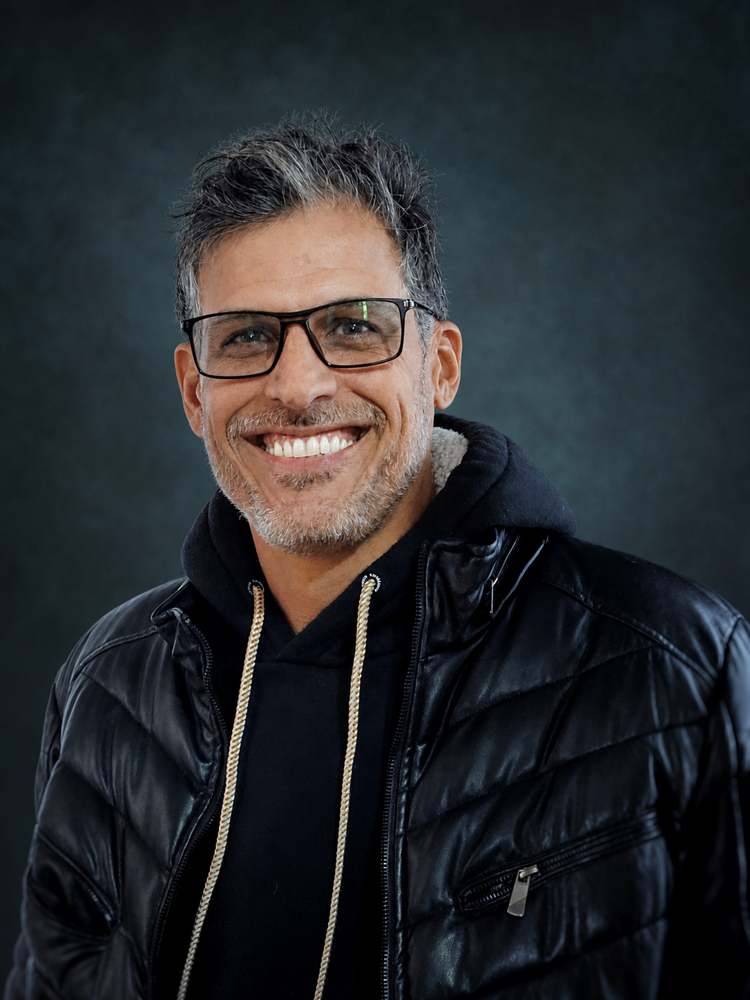

Long-form YouTube Editing
Interviews, talking-head videos, educational content, and podcast episodes edited for flow, clarity, and retention.
Long-form YouTube videos, commercials, and story-driven content crafted for clarity, rhythm, and retention.
 ↗
↗ ↗
↗ ↗
↗ ↗
↗ ↗
↗Click any project to watch the full video on YouTube.

A viewer decides in seconds whether a video is worth their time. My job is to give them a reason to stay.
I’m DeivorrK, an independent video editor helping creators and brands turn raw footage into engaging videos with purpose. Every cut, pause, visual, sound detail, and transition should strengthen the story — never distract from it.
Interviews, talking-head videos, educational content, and podcast episodes edited for flow, clarity, and retention.
Brand-focused edits that communicate a message quickly, create interest, and feel polished.
Full podcast episodes and engaging cuts for Reels, Shorts, and TikTok.
Structured edits that make complex ideas easy to follow and compelling to watch.
Strong editing starts with a clear idea and the rhythm that makes an audience want to continue.
You work directly with me from the first cut to the final export — no agency handoffs or unnecessary layers.
Thoughtful attention to detail, an organized workflow, and a collaborative process from start to finish.
Available for freelance collaborations through the platform where you found my work.